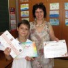

Direcţia Venituri Buget Local (DVBL) a sectorului 2 din Bucureşti. Adică birocraţii înghesuiţi la parterul unui bloc vizavi de Gara Obor, puşi să strângă taxe şi impozite pentru pomenile primarului care provoacă orgasme babetelor cu mănuşi de plastic, Neculai Onţanu, amicul politic al celebrului traseist Gabriel Oprea (foto). De o parte a ghişeelor nerăbdare, mirare [...]

Nici n-au apucat primele păsări călătoare să ajungă la jumătatea drumului către ţările calde, că a şi intrat în atenţia opiniei publice problema Sărbătorilor de iarnă. Principalul subiect pe ordinea de zi îl constituie Masa Festivă, asta pentru că la români spiritul Crăciunului trece tot pe acolo pe unde circulă şi dragostea, opţiunea politică, veselia [...]

În România, reducerile de Black Friday sunt de cinci feluri: reduceri masive. Ele sunt semnalizate prin inscripţia “stoc epuizat“; reduceri modice (sub 10%); reduceri inutile. De exemplu, “numai de Black Friday poţi achiziţiona un mouse pad la incredibilul preţ de 9 lei” (-50% faţă de valoarea din catalogul cu pernuţe de şoareci). Transportul coletului costă [...]

Le spune cineva şi anencefalilor realizatori de clipuri electorale penibile în ce constau alegerile din 9 decembrie? Nu de alta, dar nici locurile de muncă şi nici datul cu asfalt în gropi nu sunt de competenţa ori potenţa parlamentarilor. Dacă alegătorii oricum nu înţeleg pentru ce ştampilează frenetic, măcar candidaţii şi-ar putea camufla neştiinţa lansând [...]

“Poze amuzante cu susţinătorii USL funny”. Exact asta căuta acum câteva zile un român cu Google. Iniţial, dorinţa omului de a vedea USL-işti nostimi ni s-a părut superfluă. Useliştii sunt haioşi prin însăşi raţiunea lor de a exista. De ce ai mai vrea să te uiţi la nişte fotografii ca să constaţi că nişte oameni [...]

Portalul www.EVZ.ro are comentatori de aleasă calitate şi editori online de mare angajament, care-şi fac treaba cu entuziasm şi simţul răspunderii. Intitulat “cel mai bun portal de ştiri din România”, evz.ro îşi delectează vizitatorii cu opiniile argumentate şi civilizate ale cititorilor, prezentate într-o ţinută grafică originală. E o încântare să parcurgi schimburile de idei care [...]
Ştefănuţ era copilul ideal, visul învăţătoarelor, preferatul profesoarelor şi mândria părinţilor. Nu rata nicio zi de şcoală, nu neglija nicio temă şi nu uita niciun caiet acasă. Dopat din fragedă pruncie cu untură de peşte şi capsule de lecitină, elevul-model nici nu pricepea cum pot unii să ia note mici. Adică sub 9. Ştefănuţ o [...]

Tratată doar cu stimuli inflaţionişti, iar în rest sacrificată pe altarul circului electoral, economia românească se scufundă. În trimestrul al treilea, Produsul Intern Brut a scăzut atât faţă de perioada aprilie-iunie 2012 (minus 0,5%), cât şi faţă de perioada similară a anului trecut (minus 0,8%). Luate la pachet, primele nouă luni sunt încă pe plus graţie [...]

Înaintea alegerilor prezidenţiale din SUA, Dorina şi Mirela au făcut prinsoare. Dorina susţinea că Barack Obama va triumfa, iar Mirela a mizat pe Mitt Romney. Obama a rămas preşedinte. Fiindcă a pierdut pariul cu Dorina, Mirela s-a retras învinsă. Dorina trăieşte bucuria victoriei în faţa Mirelei, care “moare” de ciudă. Până aici e limpede, sperăm. [...]

Aveţi idee unde locuieşte senatorul PSD Ioan Chelaru? Nu de alta, dar omul se laudă că stă acasă indiferent cine l-ar căuta la serviciu! Cu o sinceritate brutală, candidatul USL de Neamţ zâmbeşte din afişele electorale, spunându-ne să nu-l căutăm în Parlament, prin biroul senatorial din teritoriu ori pe la vreo şedinţă. Ar fi pierdere [...]

La alegerile locale am oscilat între stabilitatea eficientă a lui Labă Vasile de la PD-L şi dinamismul promis odată cu venirea la putere a USL-istului Muia Marcel, alegându-l în final pe Tati Norocosul de la Slatina, pentru penibil intenţional. În procesul electoral de pe 9 decembrie nu mai avem dubii: preferatul nostru pentru funcţia de [...]

Citând renumiţii cercetători britanici anonimi, Libertatea.ro ne explică printr-un titlu de şchioapă că “bărbaţii care nu-şi pot vedea penisul din cauza burţii mor mai devreme“. Pe cale de consecinţă, cei care reuşesc să-şi admire masculinitatea în ciuda burţii, expiază mai târziu. Cum redactorii tabloidului online vizitat săptămânal de aproape un milion de români n-au găsit [...]